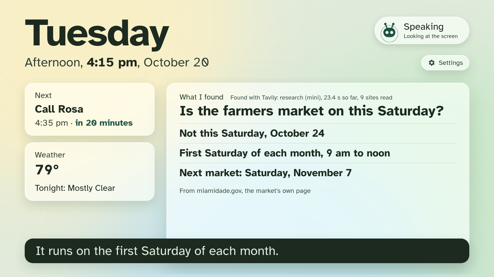

What Andy does
- Says it's a robot, from the first word. It never pretends to be a person, and never speaks as someone you know.
- Your day, the same way every time. The date, your reminders in your words, said when they're due, and the weather from the National Weather Service.
- Reads a letter you hold up. On the screen in large print. When a page asks for gift cards or rushes you, it says "Be careful" first: "Don't call or pay yet. Check with family first."
- Looks things up, and names the source. Local news, what's on this week, a link someone sent, and longer questions it researches while you carry on.
- Shows you where to look. When something new appears on the screen, Andy turns to it, and back to you.
- Looks for your glasses. Ask where you left something: Andy looks around the room, zooms in, looks closer, and points with its head only when it is sure; otherwise it says it couldn't see it.
- Notices the room (new; turning to a voice not yet tried on the robot). When someone else speaks from the side, Andy turns to them; wave, and its antennas wave back.
- Family, on your terms. Family see only what you ask Andy to share, and Andy always tells you who looked.
How it's built
- Hears
- NVIDIA Parakeet, on your own computer
- Speaks
- Qwen3-TTS, on your own computer
- Thinks
- NVIDIA Nemotron 3.5 Lightning on Nebius Token Factory, and Nemotron 3 Ultra for hard questions
- Sees
- NVIDIA Nemotron 3.5 Super VL on Nebius Token Factory; NVIDIA Cosmos Reason 2 on your own computer when the network is down
- Offline too
- The wake phrase (Vosk), reading letters (Tesseract) and finding a face to follow (YuNet), all on your own computer
- Checked
- A conversation suite judged by Nemotron 3 Ultra, run as a Nebius Serverless Job
- Searches
- Tavily
What Andy keeps
No audio or transcript is stored or logged. Andy keeps a reminder, a fact or a moment only when you ask or say yes, and a helper can see and delete all of it on one page.
Before you install
Andy needs its voice server running on a computer with an NVIDIA GPU beside the robot, and your own Nebius Token Factory and Tavily keys. The setup guide takes you through it.